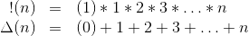
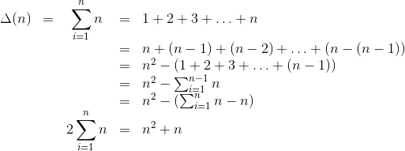
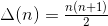
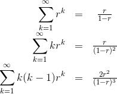

RAM is Cheap
The dirty-bit secret of RAM has always been that it is implemented as a hierarchy in hardware—implying memory access time is logarithmic, not constant time for any distance. As data sets grow and machines gain more parallel processors, we need to take this more seriously in our analysis of algorithms. Random access memory (RAM) is too cheap a mathematical model and I plan to start using a geometric model called ``Jam'' (GAM). For example I analyze buildheap() under this memory model and, out of laziness, prophesize that comparison based sorting cannot overcome O(nlog n) complexity, even when marshaling a logarithmic number of processors.
If we are going to make complexity analysis more...complex..., we need to justify why. If the addressable memory of a 64-bit computer is fixed at N=2^64 chars, why not just assert the access time for any char is log(2^64) = 64 = (constant)? And if we forge ahead with a geometric model for memory, where does the complexity stop? After all integer addition, a most fundamental operation, is also logarithmic in N. A similar debate exists regarding Scala's vectors, which you can read about at Mr. Haoyi's blog: Scala Vector Operations Aren't ``Effectively Constant Time''.
I think we should err on the side of being more complete in our analyses and consider both of these two fundamental operations logarithmic. If software can be written with these concepts in mind, hardware may be able to follow with increasing speed.
1. Triangle Series and Geometric Series
Before we get started describing the GAM model and buildheap(), there are two series that will be convenient to use, the venerable geometric series and the triangle series. The triangle series is like the factorial function, but adding integer levels instead of multiplying integer factors. There is also less to think about the ``zeroth'' element.
We can derive a closed form for the Δ series by reversing the index scheme and comparing it to the original.
Finally we are left with  .
It is helpful to have not just the infinte geometric series but also its derivative with respect to r, shifted left—and this done twice.
2. The GAM Model
The geometric access memory model is based on the heirarchial structure of hardware, adders, multiplexers, and demultiplexers, and on partions of memory and integer value types. It says that memory access time is proportional, to position of the most significant digit different from a reference address. I'm not being particularly original or creative here; heirarchial memory models are discussed in plenty of literature. [1, 2] One thing I think is surprising is the indexing direction you need to use for multiplexing, the highest bits need to code the smallest physical distances.

One can imagine adding shortcuts from memory cells into this MUX to short circuit the gate depth logarithmically for smaller distances. But it is unfortunate that determining the highest set bit in real time is also a logarithmic operation. We would need a-priori knowledge from software.